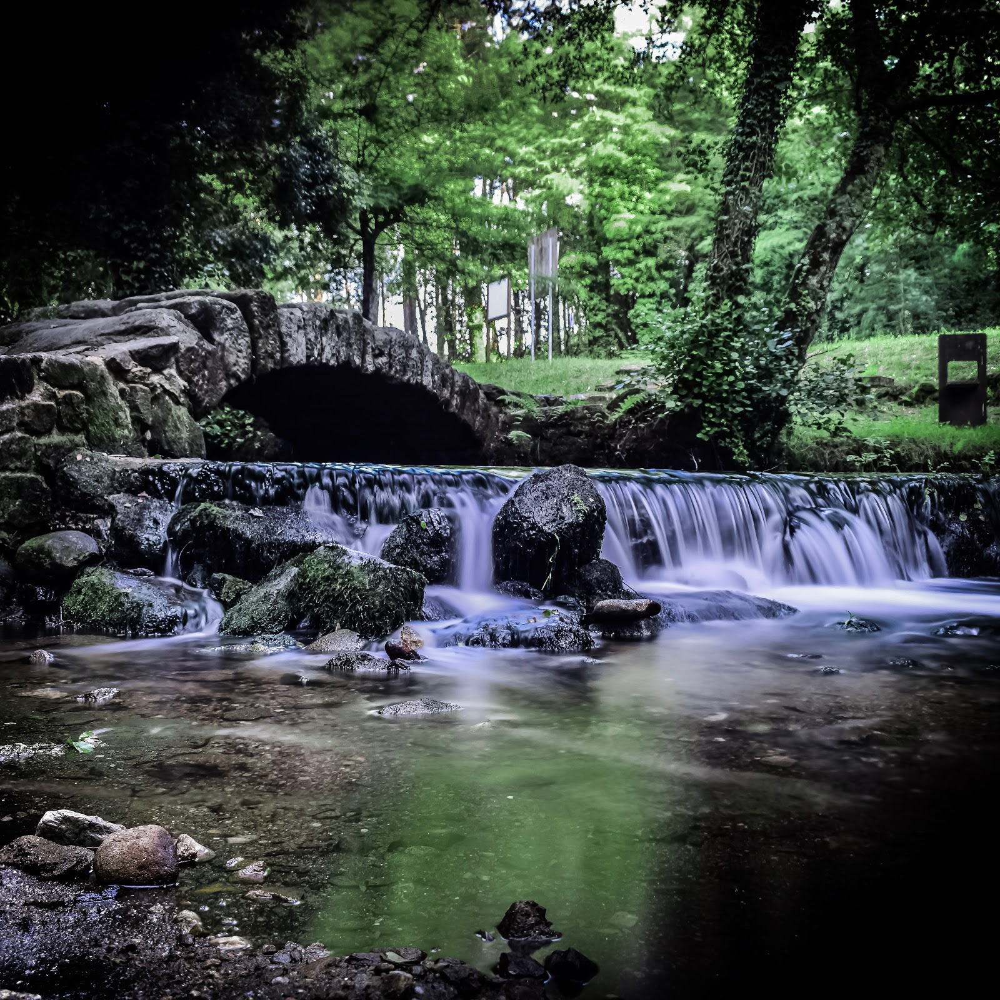

A ruta circular ao castro Lupario foi deseñada conxuntamente polos concellos de Brión e Rois. É posible iniciala desde a área de descanso de Angueira de Castro, desde a ponte Paradela ou desde calquera punto intermedio. Inclúe unha ruta base e 3 variantes cunhas lonxitudes que oscilan entre 3,8 e 4,5 km. Están sinalizados todos os cruzamentos e todas as bifurcacións.
| Inicio | Xardín do Recordo |
| Fin | Xardín do Recordo |
| Distancia | Entre 3,8km e 4,5km |
| Tipo | Circular |
| Duración | 1:30h Aprox. |
| Dificultade | Baixa |
Xardín do Recordo
“O Xardín do Recordo naceu como un sentimento feito idea xurdido da traxedia ferroviaria do 2013, e masivamente apoiado nas redes sociais. Trátase de crear un espazo para honrar e lembrar ás vítimas do accidente, onde están a ser plantados 81 simbólicas árbores do amor (Cercis). A considerada unha das mellores escolas de paisaxismo europeas, a Fundación Juana de Vega, encargouse de forma totalmente altruísta do deseño paisaxístico do noso, de todos, parque memorial. O Xardín do Recordo é un parque público de libre acceso en terreos cedidos polo Pazo do Faramello.”
Fonte: https://www.pazofaramello.com/o-xardin-do-recordo
“Espazo creado en memoria das vítimas do accidente do tren Alvia en Agrois no ano 2013.”


Ponte Paradela
“Trátase dunha pequena ponte de pedra que cun só arco salva o río Tinto. O máis probable é que servise para dar paso á importante vía de comunicación que desde Padrón chegaba a Santiago de Compostela e que ao cabo unía ao sur de Galicia e o norte de Portugal servindo de vía de peregrinación cara á tumba do apóstolo.”
Fonte: https://www.galiciamaxica.eu/galicia/a-coruna/pontedosmouros/
“Construción medieval recentemente restaurada nunha zona con encanto moi axeitada para descansar.”


Castro Lupario
“O recinto castramentado conta cunha soa entrada pola que podían acceder os carros. O resto está protexido por unha muralla duns 2 metros de ancho que, en treitos, aínda pasa dos 3 metros de alto. No medio hai unha ampla chan-coñecida por "Eira dos Mouros"-, na que se observan restos de muros, os máis deles posiblemente da Idade Media, entre os que sobresaen os alicerces dun edificio rectangular, de case setenta metros de longo por uns corenta de ancho.”
Fonte: O concello de Rois: historia, economía e arte. Clodio González Pérez.
“O castro Lupario, tamén coñecido como castro de Beca, é un castro galaico que se localiza entre as parroquias de San Xián de Bastavales (Brión) e Ribasar (Rois). Foi declarado Ben de Interese Cultural en decembro de 2009.”
Área de descanso Angueira de Castro
“Un lugar fresco e sombreado ó carón do Tinto, ideal para facer un alto no camiño nos días de sol ou calor, aquí podemos repoñer forzas, escoitar o murmurio do río e dos paxaros ou simplemente sentar ou conversar.”
Pazo do Faramello
“ Nel pódense visitar o legado da primeira fábrica de papel de Galicia, a Real Fábrica de papel do Faramello(1712) o retablo da capela (1739) realizado polo mestre do barroco galego José Gambino, nacido no pazo, pasear polo carreiro tradicional do Camiño de Santiago que corre paralelo ás fervenzas naturais do río truchero e cristalino entre unha fragua galega en excelente estado de conservación e en permanente recuperación e cunha biodiversidade fascinante, contemplar os magníficos xardíns decimonónicos do Faramello, recentemente incluídos na Guía de grandes xardíns de Galicia, admirar unha lendaria roca máxica da cultura celta alcumada “ As tetas dá posadeira”, e moitos segredos máis que este lugar fascinante agocha…” “O Pazo do Faramello é un edificio de comezos do século XVIII de estilo barroco compostelano civil. É o último Pazo atravesado polo Camiño Portugués, e polo Roteiro do Mar de Arousa, abre as súas portas por primeira vez nas súas máis de 300 anos de apaixonante historia.”